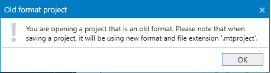
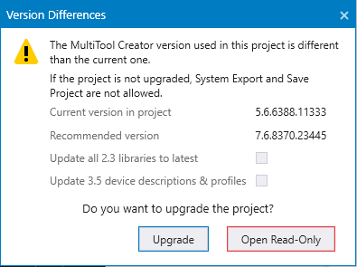

Upgrading is supported for projects made with MultiTool Creator version 3.x or newer.
|
|
Upgrading is supported for projects made with MultiTool Creator version 3.x or newer. |
When a project is opened, MultiTool Creator automatically checks the project file and library versions.

If the opened project is made with older MultiTool Creator version, an upgrade is suggested for the project.

Upgrading the MultiTool Creator project means that the code template is updated on next System Export and CODESYS import. Also, the new features and libraries can be taken into use. MultiTool Creator creates a directory Backups and archives the old project files into a zip file with the file extension .backup.
Updating the project libraries, CODESYS device description files and profiles can be done by selecting Update all 2.3 libraries to latest and/or Update 3.5 device description & profiles. Note that updating these might also require an update to the device's CODESYS runtime. These CODESYS libraries, device description files and profiles can also be manually updated in MultiTool Creator Library Manager and Device Properties.
Current MultiTool Creator generated prefixes may differ from the prefixes generated by older versions.
Open Read-Only opens the project in read-only mode: the project can be viewed but saving and System Export are not possible. However, the project can be opened in read-only mode and then upgraded by selecting Project > Upgrade.
Check the following known issues when making an upgrade:
|
Device type |
Feature |
Description |
|
3606 |
I/O - pin 1.14 |
Some of the modes are changed for pin 1.14. If the pin is used as a 1-ch pulse input, check that the correct mode is selected after the conversion. |
|
3606 |
I/O - pin 1.25 |
Some of the modes are changed for pin 1.25. If the pin is used as a 1-ch pulse input, check that the correct mode is selected after the conversion. |
Epec Oy reserves all rights for improvements without prior notice.
Source file topic200095.htm
Last updated 25-Jun-2025